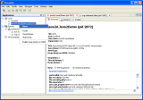
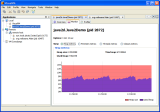
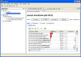

VisualVM is a visual tool that integrates several existing JDK software tools and lightweight memory and CPU profiling capabilities. This tool is designed for both production and development time use and further enhances the capability of monitoring and performance analysis for the Java SE platform.
|  |  |  |
| Overview of running Java application | Basic telemetry of running Java application | Profiling performance of running Java application |
Currently we are working on a preview version of the VisualVM. Source code and downloads will be available soon.
The proof-of-concept version of the tool has been presented at JavaOne 2007 as a BOF-9123. You can download the presentation slides here.